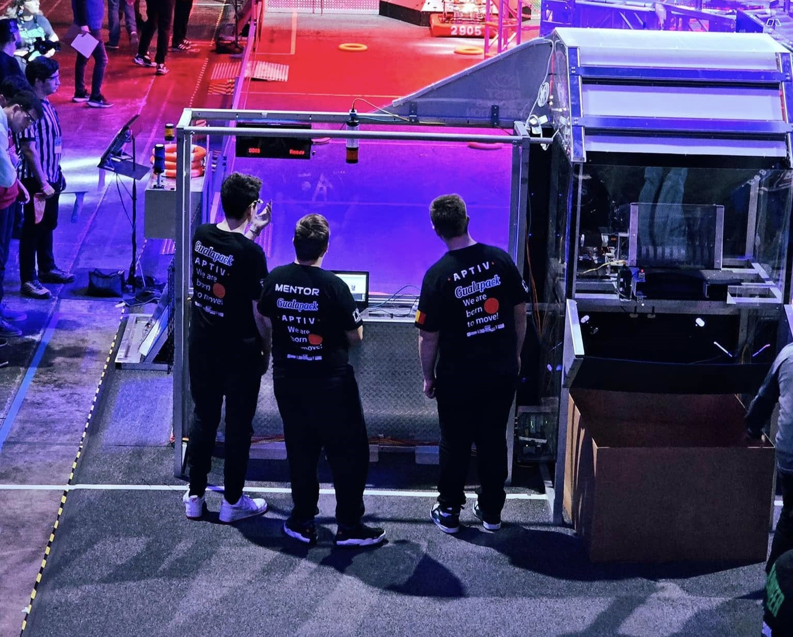
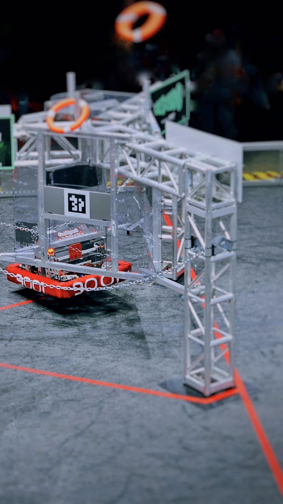
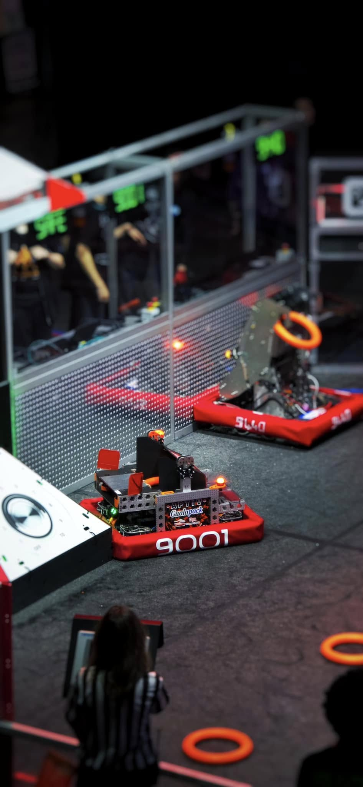
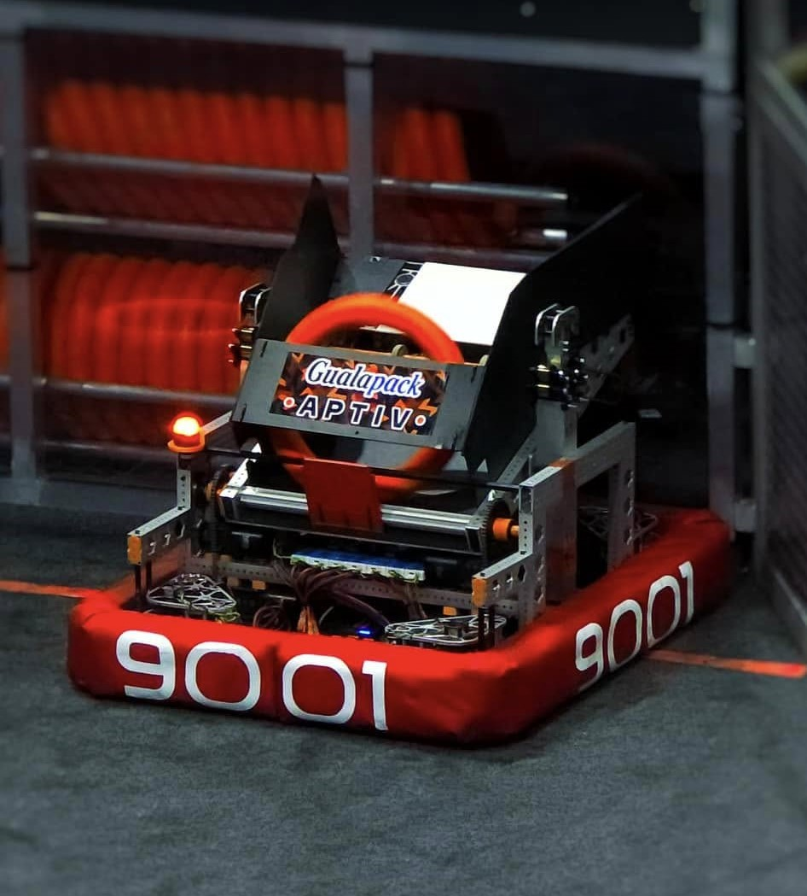

2024
Crescendo
O pagina separata pentru un sezon care poate fi prezentat mult mai clar prin imagini, text scurt si recap ordonat decat printr-un singur card in homepage.
FRC ArchiveSpeaker cyclesMedia-ready
2024
O pagina separata pentru un sezon care poate fi prezentat mult mai clar prin imagini, text scurt si recap ordonat decat printr-un singur card in homepage.

Overview
Aici poti explica strategia, identitatea robotului, ce a mers bine si cum a evoluat echipa pe parcursul sezonului Crescendo.
Highlights
Galerie
Pagina este deja pregatita pentru cadre reale din Crescendo: robot, meciuri, pit si momente de echipa.


